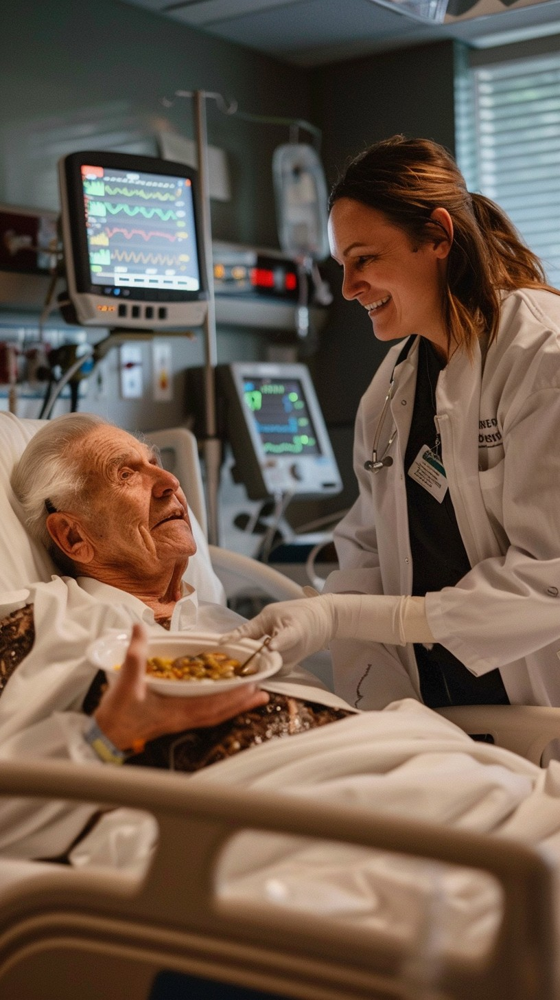
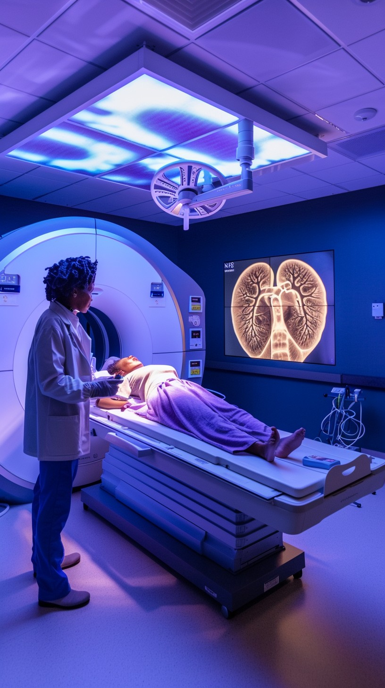
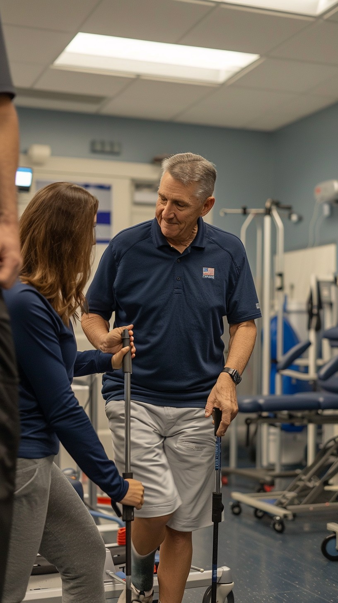

At The City Hospital, we are committed to providing a comprehensive range of medical services designed to address all aspects of your health. Our primary care services include routine check-ups, immunizations, chronic disease management, and preventive screenings, aimed at maintaining your overall well-being and preventing future health issues. For specialized care, our hospital offers advanced treatment options in fields such as cardiology, oncology, neurology, orthopedics, and more, with the latest technology and innovative techniques to manage complex conditions effectively.
Our emergency department is equipped with cutting-edge resources and staffed by highly trained professionals to provide swift, expert care for urgent medical situations. We offer a wide array of diagnostic services, including state-of-the-art imaging, laboratory tests, and specialized diagnostics, ensuring accurate and timely identification of health concerns.
In addition to surgical services that range from minimally invasive procedures to complex operations, we provide comprehensive postoperative care and rehabilitation.
Our rehabilitation services include physical therapy, occupational therapy, and speech therapy, tailored to support your recovery and enhance your functional abilities.
We also emphasize the importance of wellness and preventative care through our health education programs, nutritional counseling, and lifestyle management services. Our community outreach initiatives focus on promoting health awareness and providing access to essential health resources.
At [Hospital Name], we are dedicated to delivering personalized, high-quality care in a nurturing environment, committed to supporting your health journey every step of the way.
Services
Available Services
Supports pregnant women and newborns with prenatal, delivery, and postnatal care.
Assists patients in regaining function and improving quality of life through physical, occupational, and speech therapy.
Provides medical care tailored to the unique needs of infants, children, and adolescents.
Delivers comprehensive diagnostic services including laboratory tests and imaging studies.
Offers personalized nutritional advice and management to support overall health and wellness.
Provides expert mental health services including counseling and therapy for individuals and families.
Choose your Services
Emergency Services

Inpatient Services

Outpatient Services
Surgical Services

Diagnostic Services
Maternity and Neonatal Care
Pediatric Services
Mental Health Services
